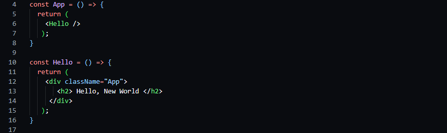

3-ий урок React
Компонента - это функция, возвращающая разметку JSX. Но вызов компоненты просиходит, в отличие от функции, через
тэг. То есть, создавая компаненту, мы создаем тэг из названия этой компоненты.
Тэг для вызова компоненты выглядит так: <Name />. Как пример <App /> . Через этот тэг можно ещё писать компоненты в компонентах. По сути в этом и нет ничего удивительного. Допустим:
- Компонента - это функция, возвращающая разметку JSX.
- Чтобы вызвать компоненту нужно использовать её тэг.